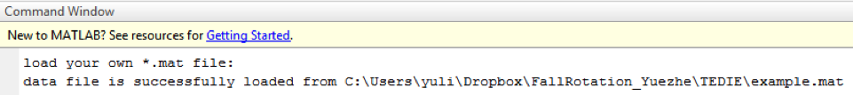

<!DOCTYPE html>
<html>
<head>
	<title></title>
</head>
<body>

</body>
</html>
<!-- this is for the title -->
<head>
	<meta charset = 'utf-8'>
	<title>TEDIE Manual </title>
</head>
<style>
	body {background-color: white}
	h2 {color: #3498D8;}
	.tsection
	{
		border: thin #336699 solid;
		background-color: white;
		padding: 20px;
		margin: 20px;
		text-align: left;
		font-size: 14pt;

	}
</style>


<body>
<!-- this is for the content part of the TEDIE manual -->
<h1> TEDIE MANUAL </h1>
	<nav>
		<ul>
			<li><a href = "#TEDIE_matlab">Use TEDIE in MATLAB</a></li>
			<li><a href = "#load_data">Load Data for TEDIE</a></li>
			<li><a href = "#disc_choice">Choose Discretization Method for TEDIE</a></li>
			<li><a href="#result">TEDIE Result in Commend Window</a></li>
			<li><a href="#code">TEDIE Source Code</a></li>
		</ul>
	</nav>

<!-- this is for the body part of the TEDIE manual -->

	<h2 id = TEDIE_matlab>Use TEDIE in MATLAB</h2>
	<div class = "tsection">
		This document explains how two-step discretization evaluation (TEDIE) works with an example data file. <br>
		TEDIE is developed under MATLAB2016b. It is also compatible with MATLAB2017a. <br>
		<p>We run TEDIE using the <a href = main_example.m> main </a>script. </p>
		<br>
	</div>


	<h2 id = "load_data">Load Data for TEDIE</h2>
	<div class = "tsection">
		<b>Background:</b>
		<br>
		<p>We include an example (also the default) data file, example.mat, dealing with data from an in silico network with 13 nodes.
			The .mat file has info for 24 matrices: the original data, and 23 different discretizations of it
			(bikmeans2-5, i2-5, kmeans2-5, max25, max50, max75, mean, q2-5, TDT, top25, top75).
			Each matrix contains 8 time series on the 13 node network, each with 9 time points, resulting in a 104 by 9 matrix.
			If you are using your own data, please make sure that for each of the 8 time series, each variable (node) is in its own row.
			The columns correspond to the time points.
			<br>

			To run the main_example.m script on MATLAB: open the file in the editor, and click “Run”.
			Alternatively, enter the following command in the Command Window: main_example
			<br>
			When a dialog window will pop up, you can choose your own data (*.mat) file.
			Closing the window or hitting “Cancel” will load the default example data into MATLAB workspace.
			<br>
			
			<br>
			In command window, it will indicate whether user data is loaded successfully, <br>
			
			<br>
			or default data is loaded.
			<br>
			
		</p>
	</div>


	<h2 id = "disc_choice">Choose Discretization Method for TEDIE</h2>
	<div class = "tsection">
		<p>Next, select the discretization of interest in the new dialog, and click “close”. <br>
		<br>

		</p>
	</div>


	<h2 id = "result">TEDIE Result in Command Window</h2>
	<div class = "tsection">
	<p>
		Then the command line will show the discretization of choice, and whether it passes qualification step; if passed, then the mean area between the curves would show up in the commend window. <br>
		<br>
		Otherwise, it will tell you to choose another discretization method.
		<br>
	</p>
	</div>


	<h2 id = "code">TEDIE Source Code</h2>
	<div class = "tsection">
	Our source code is available on <a href = "https://github.com/yuezhelee/DiscretizationAlgorithms">GitHub</a>
	<ul>
		<li><a href = "https://github.com/yuezhelee/DiscretizationAlgorithms/blob/master/main_example.m"> the file that should run when using TEDIE </a></li>
		<li><a href = "https://github.com/yuezhelee/DiscretizationAlgorithms/blob/master/prebenchmark.m"> calculate area between two lines </a></li>
		<li><a href = "https://github.com/yuezhelee/DiscretizationAlgorithms/blob/master/benchmark.m"> the TEDIE main function, including both qualification and mean area between the curves </a></li>
		<li><a href = "https://github.com/yuezhelee/DiscretizationAlgorithms/blob/master/choosedialog.m"> discretizaztion choosing window </a></li>
		<li><a href = "https://github.com/yuezhelee/DiscretizationAlgorithms/blob/master/GetDiscretizationMethods.m"> function file for discretization selection window  </a></li>
		<li><a href = "https://github.com/yuezhelee/DiscretizationAlgorithms/blob/master/example.mat" target = '_blank'> example data file </a></li>
	</ul>

	</div>


</html>
